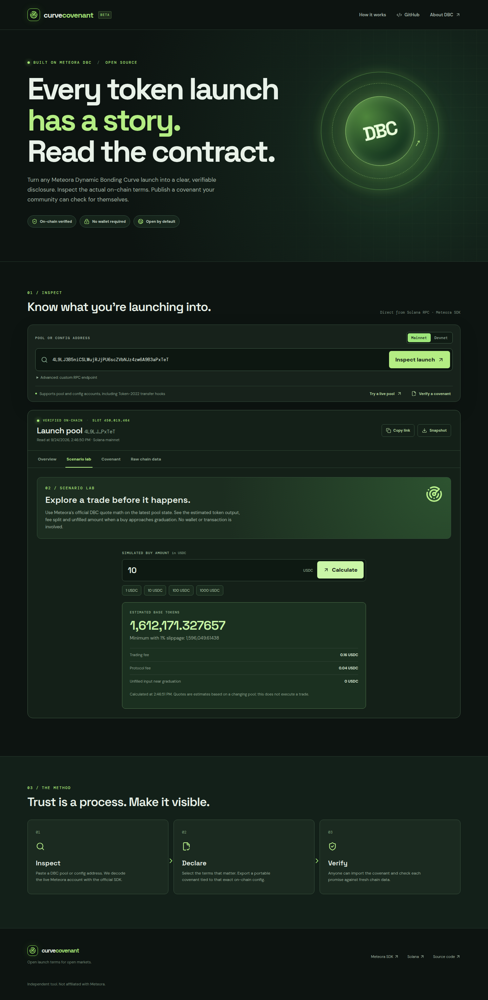

A disclosure and verification layer for Meteora Dynamic Bonding Curve launches.
DBC lets builders set fees, curves, migration rules, liquidity distribution and token authority. Those choices are on-chain, but buried in program accounts.
People cannot easily read all launch settings in one place.
Screenshots and posts do not update as a pool changes.
A shared document rarely proves the launch owner signed it.
A launch owner selects exact on-chain claims and signs them with a DBC role wallet. Any visitor can import the file, verify the Ed25519 signature and compare every field with a fresh read.
Example values from a live public mainnet pool. Not a product endorsement.
Read-only. No funds or wallet needed to inspect and simulate.

Launch studios design the token. Screeners find the pool. Curve Covenant makes its claims checkable.
Integration and paid monitoring are product plans, not existing revenue or partnerships.
A real DBC pool can be inspected and quoted in the browser. The source, tests and deployment are public. Signed disclosures can be checked against on-chain roles.
On-chain pool, config and quote results.
SDK decoding, signatures and tests.
Issuer adoption, embeds and historical monitoring.